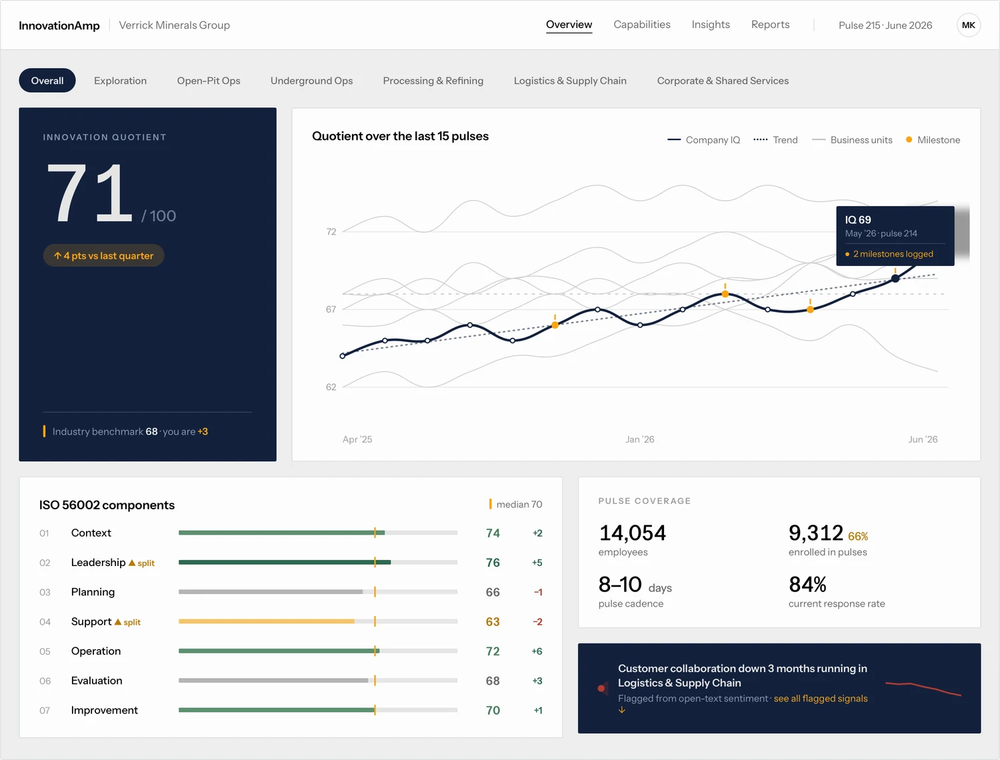
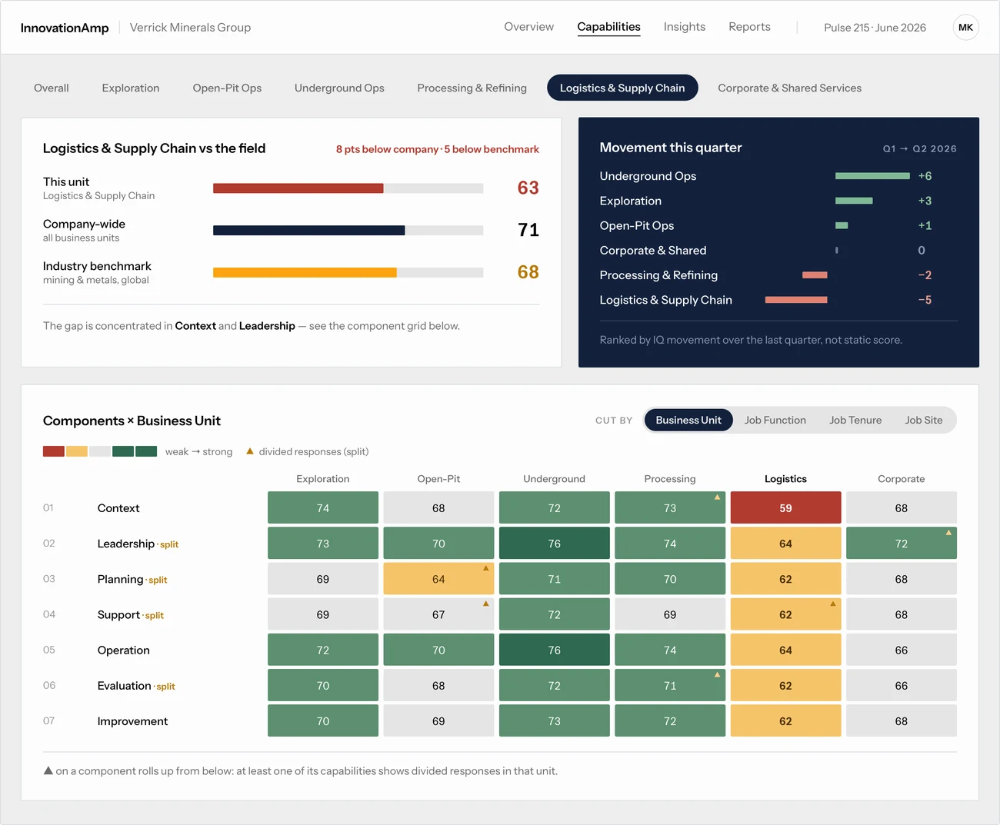
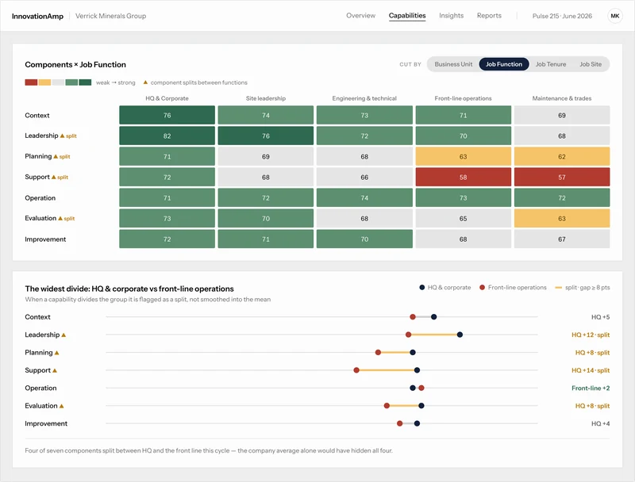
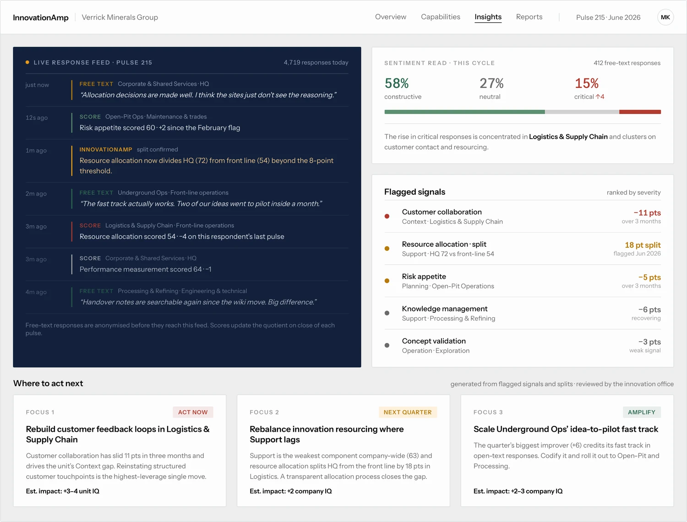
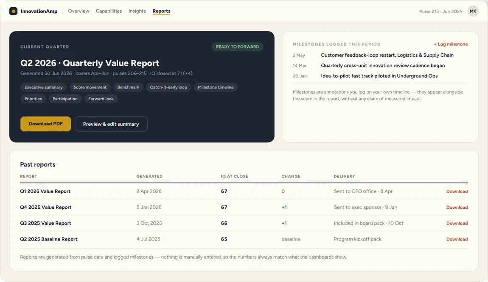
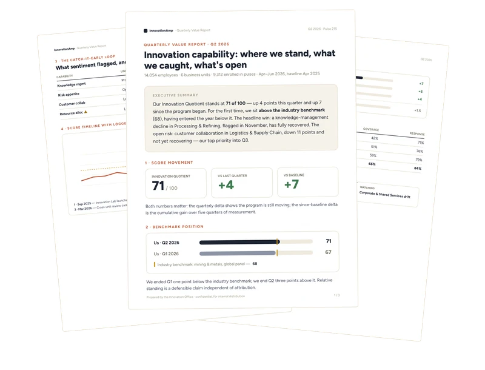

Most innovation leaders can prove their innovation management system exists. Almost none can prove anyone believes in it. InnovationAmp closes that gap: not once a year, but continuously, through short pulse surveys.

Overview — your Innovation Quotient, its trend against the industry benchmark, and scores for all seven ISO 56002 components.
You can document the system, get it signed off, even certified. None of that tells you if anyone actually believes in it, until an audit flags it or a launch fails. InnovationAmp closes that gap while you can still do something about it.
People feel a system slipping long before the lagging metrics show it. Pulses flag which capability is losing ground, and where, while it's still cheap to fix.
24 capabilities across the standard's 7 components, every item clause-mapped. Certification confirms the system exists on paper. This measures whether people believe it, the layer an audit never reaches.
Every pulse adds to the trend instead of replacing it. You see whether last quarter's fix actually held — and your Innovation Quotient compounds.
Cut every ISO 56002 component by business unit, job function, tenure, or site. When a capability divides opinion instead of averaging out, it's flagged rather than smoothed over.


A single unit against the company and the benchmark, with the full components grid — and the same components cut by job function, where HQ and the front line diverge.

The live response feed and sentiment read, with flagged signals ranked by severity and where to act next.


The reports hub with milestones logged this period — and the quarterly report it generates, ready to forward.
Short surveys go to the people who live the system — by email, Slack, or Teams. About a minute each.
Responses roll up into an Innovation Quotient across 24 capabilities. When a result divides the group, it's flagged as a split — not folded into the mean.
Each pulse surfaces what moved, where, and a plain-language recommendation for what to do next.
We run a full pulse across your organization, then give your leadership a walkthrough of the results — what the scores say, where the splits are, and tangible recommendations from our roster of innovation experts.
Scoping call. We agree who gets pulsed and how results should be cut — business unit, function, tenure, site — so the splits mean something to your structure.
One full pulse. All 24 capabilities across the seven ISO 56002 components, sent to your whole organization. About a minute per person, anonymous by design.
Expert analysis. An innovation practitioner from our roster reads your results alongside the open text — not just the scores, but what people wrote and why it diverges by group.
Leadership walkthrough. A working session with your team: where you stand, which gaps matter most, and what's driving them. Questions answered live, not in a follow-up deck.
Written recommendations. A prioritized set of moves — what to fix first, who owns it, and what to re-measure — plus your baseline scores, so a later pulse has something to compare against.
Sign up, invite your own people, and schedule recurring pulses. Watch the Innovation Quotient move, catch splits early, and act on the recommendations.
It's the international guidance standard for innovation management systems — how an organization arranges leadership, strategy, support, and processes so innovation happens on purpose rather than by luck. It sits in the ISO 56000 family: 56000 defines the vocabulary, 56001 sets the requirements auditors certify against, and 56002 describes how to actually run the system. We measure against 56002 because that's the layer where day-to-day practice lives.
It's the earliest signal you have. Research on organizational change consistently finds that how employees perceive a system — whether they understand it, trust it, and see leadership actually using it — predicts whether it gets adopted, long before output metrics move. Change initiatives tend to fail on willingness, not documentation, and perception is the earliest read you get on willingness.
Perception doesn't replace outcome metrics. It tells you which outcomes are about to move, while you can still do something about it.
No, and it doesn't replace your certification body. It measures the layer an audit doesn't touch: whether people across the organization are aware of, and bought into, what the system prescribes, and tracks it continuously, so certification becomes an ongoing signal instead of a one-time event.
No. Items map to the standard's clauses, so it works whether you're certified, preparing for certification, or simply using 56002 as a reference model.
About a minute per person. Cadence is yours to set — weekly, monthly, whatever fits how you want to track it. Short and recurring instead of an annual assessment — designed to be answered honestly, not endured.
No one. Responses are anonymous by design and reported in aggregate — splits show where a group disagrees, never who. Data is stored per organization, never shared or sold, and never used to train models for other customers.
AmpAI turns aggregate scores and comments into theme summaries and recommendations. It interprets results — it doesn't make decisions for you.
Self-serve monitoring is $499 per organization per month, flat regardless of size. Guided assessments are quoted per engagement, starting at $5,000.